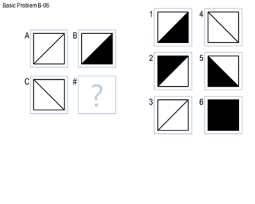
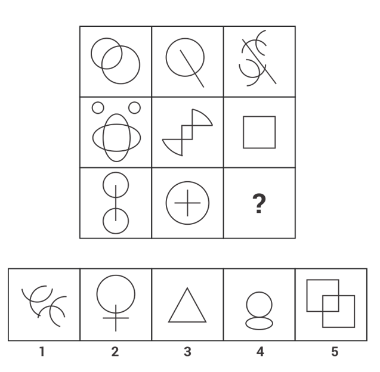

Raven's Progressive Matrix Project
Welcome to one of the coolest projects I’ve built—a deep dive into solving Raven's Progressive Matrices using state-of-the-art image processing and pattern recognition techniques.
My Journey
I embarked on this project with the goal of mimicking human cognitive pattern recognition. Using Python and robust libraries like OpenCV, Pillow, and NumPy, I developed an algorithm that not only solves these puzzles but also sheds light on how visual patterns can be deciphered.
Under the Hood
Here’s a closer look at the technical side of the project:
- Grayscale Conversion & Thresholding: Each input image is first converted to grayscale and thresholded to create a binary version, emphasizing key contours.
- Contour Detection & Feature Extraction: The algorithm detects contours and extracts geometric features like edge count, centroid, area, and orientation using techniques such as ellipse fitting.
- Pattern Comparison Techniques: Using overlay methods, pixel difference calculations, and bitwise operations, the system compares segments of the puzzle to deduce transformation rules.
- Decision-Making Logic: By aggregating similarity scores from multiple comparisons, the algorithm selects the best answer, showcasing both precision and innovation.
Simple Problem
A snapshot of a straightforward puzzle.
Challenging Puzzle
An example of a more complex, challenging puzzle.